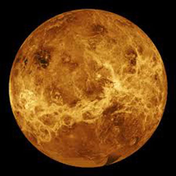

Venus is a dim world of intense heat and volcanic activity. Similar in structure and size to Earth, Venus’ thick, toxic atmosphere traps heat in a runaway 'greenhouse effect. The scorched world has temperatures hot enough to melt lead. Glimpses below the clouds reveal volcanoes and deformed mountains. Venus spins slowly in the opposite direction of most planets.